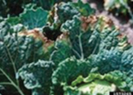
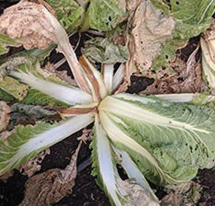
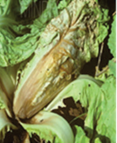
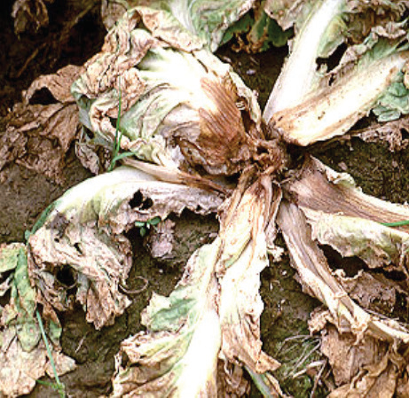

Black rot disease
How to know it: Leaves show V-shaped lesions (refer to Figure 6.9).
How to manage it: Use disease-free seedlings, and rotate crops.


Figure 6.9: Black rot
Bacterial soft rot disease
How to know it: Black or brown infected veins (refer to Figure 6.10).
How to manage it: Plant on raised beds, and avoid water logging.


Figure 6.10: Bacterial soft rot
Exercise 6.1
1.If you want to grow Chinese cabbage but your soil is not fertile, what steps would you take to improve the soil?
2.You have started growing Chinese cabbage but you realise that the weather is going to be very cold. What would be your next step?
3.You have grown Chinese cabbage for three months but it is not showing signs of yielding. What could be wrong and how would you solve it?
4.You have noticed that the Chinese cabbage plants are full of pests. How would you solve this problem?
Harvesting and postharvesting management of Chinese cabbage
Chinese cabbage takes 40-100 days to mature.
Non-headed types are ready to eat when the leaves are big enough.
How you harvest it depends on demand of the market.
Some markets want the very tender leaves inside, which requires to cut off the leaves at the base, above the soil.
For markets that want moderately tender